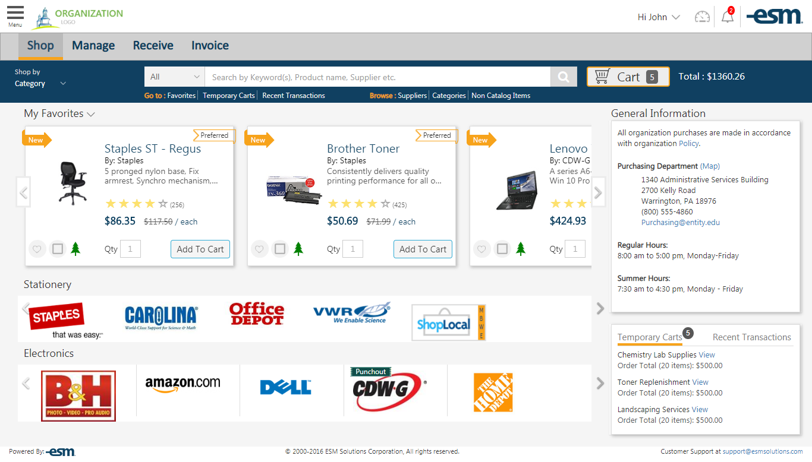

<ion-content padding>
  <!--  -->
</ion-content>
<ion-footer>
  <ion-fab bottom right>
    <button (click)="openChatPopup()" class="popupclass" color="secondary" ion-fab mini>
      <ion-icon name="chatbubbles"></ion-icon>
    </button>
    <ion-fab-list side="top">
    </ion-fab-list>
  </ion-fab>
</ion-footer>